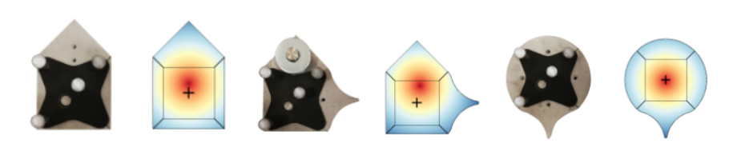
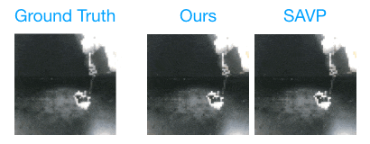
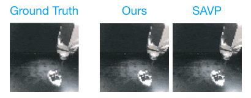
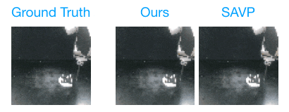
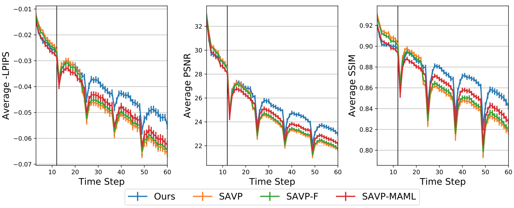
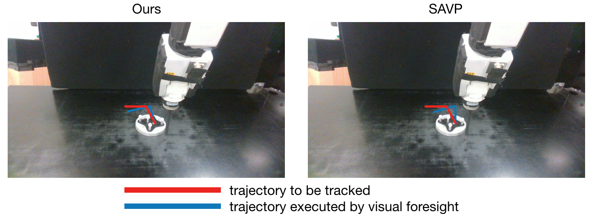

Experience-embedded Visual Foresight
Lin Yen-Chen Maria Bauza Phillip Isola
MIT CSAIL
CoRL 2019
Paper | Code
Abstract
Visual foresight gives an agent a window into the future, which it can use to anticipate events before they happen and plan strategic behavior. Although impressive results have been achieved on video prediction in constrained settings, these models fail to generalize when confronted with unfamiliar real-world ob- jects. In this paper, we tackle the generalization problem via fast adaptation, where we train a prediction model to quickly adapt to the observed visual dynamics of a novel object. Our method, Experience-embedded Visual Foresight (EVF), jointly learns a fast adaptation module, which encodes observed trajectories of the new object into a vector embedding, and a visual prediction model, which conditions on this embedding to generate physically plausible predictions. For evaluation, we compare our method against baselines on video prediction and benchmark its utility on two real world control tasks. We show that our method is able to quickly adapt to new visual dynamics and achieves lower error than the baselines when manipulating novel objects.
What's The Scoop?
Dynamics model that can adapt quickily is important for robust model-based control. In this work, we proposed a meta-learning algorithm to learn dynamics model that can perform few-shot adaptation. We show that it can scale to high-dimensional visual dynamics.
How Does It Work?
Our method consists of two steps: 1. Adaptation and 2. Prediction. 1. Adaptation: encode prior experiences (e.g., videos) with novel objects into a vector called Context. 2. Prediction: conditioning on Context, perform prediction to learn dynamics.
Dataset
We perform experiments on Omnipush, a pushing dataset consists of 250 pushes for 250 different objects. Since it contains data of diverse and related objects, we believe it is a suitable benchmark to study meta-learning. Example objects and their mass distributions are shown below:
Results
Action-conditional Video Prediction

Example 1 |

Example 2 |

Example 3 |
Quantitative Results for Video Prediction
|  |
Model-based Control
|  |
Analysis
We collect pushing videos of 20 novel objects and visualize their context embeddings through t-SNE. We found that embeddings are closer to each other when objects posses similar shapes and mass, which typically cause similar dynamics.

Paper
PDF, CoRL 2019
Citation
Code
Related Work
Acknowledgement
We thank Alberto Rodriguez, Shuran Song, and Wei-Chiu Ma for helpful discussions. This research was supported in part by the MIT Quest for Intelligence and by iFlytek.